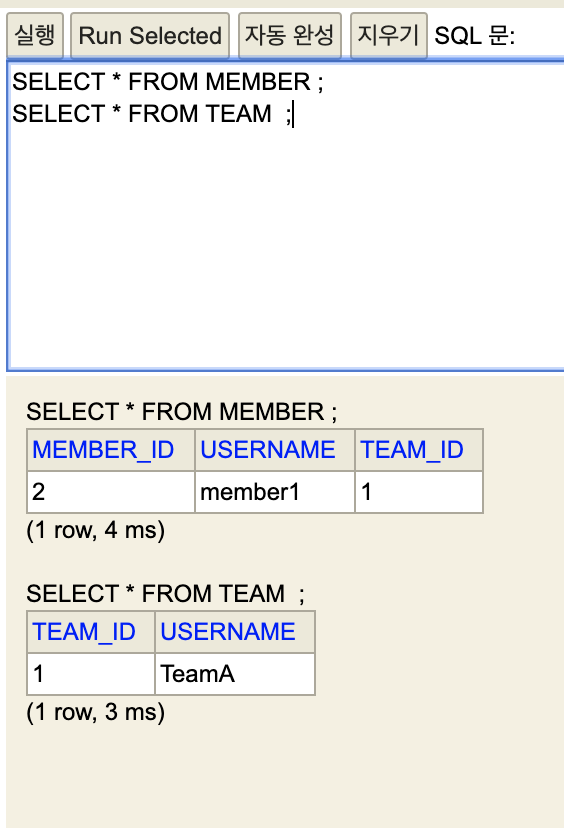

“JPA”
기본 설정
항상 양쪽에 값을 설정하자
연관관계 주인 이 아닌 쪽에 값 설정 시
1
2
3
4
5
6
7
8
9
10
11
12
| Member member = new Member();
member.setUsername("member1");
entityManager.persist(member);
Team team = new Team();
team.setUsername("TeamA");
team.getMembers().add(member);
entityManager.persist(team);
entityManager.flush();
entityManager.clear();
|
- Member의 teamId가 null임
- mappedBy 는 읽기전용이므로 jpa가 insert하거나 update 할때 처리하지 않음
연관관계 주인에 값 설정
1
2
3
4
5
6
7
8
9
10
11
12
13
| Team team = new Team();
team.setUsername("TeamA");
entityManager.persist(team);
Member member = new Member();
member.setUsername("member1");
member.setTeam(team);
entityManager.persist(member);
entityManager.flush();
entityManager.clear();
|

그럼 연관관계 주인에만 값을 설정하면 괜찮을까?
1
2
3
4
5
6
7
8
9
10
11
12
13
14
15
16
17
18
19
20
| Team team = new Team();
team.setUsername("TeamA");
entityManager.persist(team);
Member member = new Member();
member.setUsername("member1");
member.setTeam(team);
entityManager.persist(member);
Team findTeam = entityManager.find(Team.class, team.getId());
List<Member> members = findTeam.getMembers();
System.out.println("================");
for(Member m : members){
System.out.println("m : " + m.getId());
}
System.out.println("================");
transaction.commit();
|
- Team이 영속성 컨텍스트에 들어감.
- Team은 1차캐시에서 로딩 된 순수한 객체 상태.
- Team 안의 Member 컬렉션의 값이 없음.
- 영속성 컨텍스트를 비운다면 디비에서 다시 조회.
- 지연 로딩으로 멤버의 값을 가져옴.
- Team 안의 Member 컬렉션의 값이 있음.
양방향 연관관계 셋팅 시에는 양쪽 다 값 셋팅 필요하다.
연관관계 편의 메소드 사용하기
- 연관관계 편의 메서드는 연관관계를 맺는 한쪽에만 설정.
- N, 1 아무쪽에나 설정해도 됨.
- 만약 둘다 연관관계 편의 메서드가 있을 시 무한 루프 발생 가능성 조심.
1
2
3
4
5
6
7
8
9
10
11
12
13
14
15
16
17
18
19
20
21
22
23
24
| @Entity
public class Member {
@ManyToOne
@JoinColumn(name = "TEAM_ID")
private Team team;
...
public void changeTeam(Team team) {
this.team = team;
team.getMembers().add(this);
}
}
@Entity
public class Team {
@OneToMany(mappedBy = "team")
private List<Member> members = new ArrayList<>();
...
public void addMember(Member member){
member.setTeam(this);
members.add(member);
}
}
|
양방향 매핑 시 무한 루프 조심하기
- toString(), lombok, Json 생성 라이브러리.
- Json 생성 라이브러리 쓰는 순간 무한루프.
- 컨트롤러에서 entity를 절대 반환하지 않기.
- entity 변경 시 api 스펙 바뀌어야함 -> dto 로 변환 반환.
설계는 단방향 매핑으로 끝내자
- 단방향 매핑만으로도 이미 연관관계 매핑은 완료.
- 1:N 일때 N 쪽에 단방향 연관관계를 일단 설정하기.
- 양방향은 필요할 때 추가.
연관관계의 주인을 정하는 기준
- 연관관계 주인은 외래 키의 위치를 기준으로 정해야함.
출처
자바 ORM 표준 JPA 프로그래밍 - 기본편(김영한)